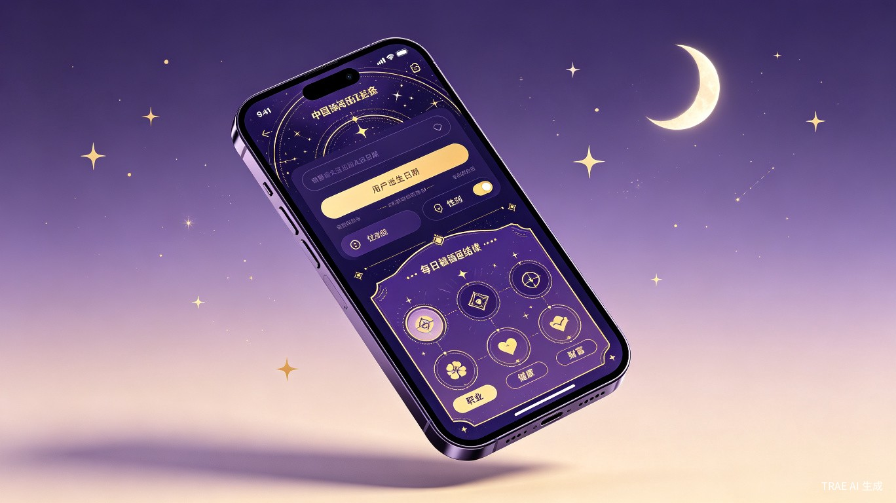

玄学生辰历 · 每日精选推荐
TRAE Work 创意赛提交文档
生活娱乐
小程序 / HTML 交互页面
AI + 传统命理
社交裂变
01 Demo 简介
是什么：一款融合传统命理学与现代 AI 技术的个性化每日运势应用（HTML 交互式 Demo），用户输入生辰八字、性别和所在地区后，系统运用子平法（四柱八字）和盲派命理两种体系进行交叉分析，生成涵盖事业、财运、感情、健康等多维度的每日运势报告，并支持一键生成精美分享卡片。
面向谁：核心用户为 20-40 岁对传统文化、玄学、星座运势感兴趣的年轻女性。她们关注自我成长、情感关系和职业发展，愿意为"了解自己"付费，是小红书、抖音上玄学内容的高频消费群体。次要用户为对命理文化感兴趣的男性及中老年用户。
主要功能
- 生辰八字排盘：根据用户输入的出生日期、时辰、性别、地区，自动计算天干地支四柱八字，展示年柱、月柱、日柱、时柱及对应五行属性。
- 双体系命理分析：分别运用子平法（分析日主强弱、用神、十神格局）和盲派命理（做功、财星、夫妻宫等）两种体系进行交叉分析，生成个性化的每日运势解读。
- 六维运势评估：从事业、财运、感情、健康、学业、人际六个维度进行运势评级（大吉/中吉/平稳/小有波折），每个维度附带详细解读文案。
- 幸运指引系统：根据日主五行推算每日幸运色、幸运方位、幸运数字、吉时、宜忌等生活指引。
- 社交分享卡片：一键生成精美的运势分享海报，包含综合评分、核心运势标签和二维码，支持保存图片和复制链接。
- 历史记录管理：自动保存每次解析结果到本地存储，支持查看历史、点击回看详情、单条删除和一键清空。
 产品概念图
产品概念图

产品原型展示
02 Demo 创作思路
灵感来源
命理文化在中国有数千年历史，是中华传统文化的重要组成部分。然而，命理咨询行业数字化程度极低，线上产品多以泛泛而谈的"生肖运势"为主，缺乏基于个人真实生辰的精准分析。随着大语言模型的发展，结构化的命理分析成为可能——将传统智慧以普惠的方式交付给每一个用户，这正是这个创意的灵感来源。
想解决的问题
- 信息泛化，缺乏个性化：现有运势 App 只按生肖或星座推送，12 个人共享同一份运势，与个人实际命盘毫无关联，用户感知价值极低。
- 专业门槛高，信任成本大：线下命理师水平参差不齐，价格从几十到数千元不等，普通用户难以判断真伪，且需要预约、面谈，时间成本高。
- 隐私顾虑，社交尴尬：命理咨询属于私密需求，很多人不愿公开寻求此类服务。一个可以匿名使用、私密查看的数字产品能大幅降低心理门槛。
- 缺乏现代化的呈现方式：传统命理内容充斥晦涩术语（如"伤官见官""枭神夺食"），年轻用户难以理解。需要将复杂命理逻辑翻译为现代、易懂、可视化的日常建议。
为什么做这个方向
选择"玄学生辰历"这个方向，基于以下判断：
- 市场空间大：命理/玄学市场在中国规模超千亿元，年轻用户付费意愿强，且持续增长。
- 技术可行性高：大语言模型具备强大的推理和文本生成能力，可以结构化地完成命理分析任务，无需训练专业模型。
- 社交裂变天然适配：运势内容天然具有分享属性，"每日一推"的低频高粘性模式非常适合社交传播，LTV/CAC 比值远超常规工具类产品。
- 文化传承价值：以数字化方式传承和活化中国传统命理文化，让更多年轻人接触并理解这一文化瑰宝，具有正向的社会意义。
03 Demo 体验地址
本 Demo 为交互式可体验的 HTML 格式文件，可直接在浏览器中打开体验完整功能。
体验方式：解压后用浏览器打开 fate-daily-almanac.html 文件即可。推荐使用 Chrome / Edge / Safari 等现代浏览器，移动端和桌面端均可正常使用。
体验流程：首页 → 输入生辰信息（出生日期、时辰、性别、地区）→ 点击"开始命理推演"→ 观看 AI 分析动画 → 查看运势结果 → 生成分享卡片。也可点击"查看历史记录"浏览历史解析结果。
核心用户流程：
输入生辰
→
选择性别
→
定位地区
→
AI 命理分析
→
生成报告
→
分享传播
04 TRAE 实践过程
本作品完全使用 TRAE Work 完成，从创意构思、UI 设计、前端开发到交互逻辑实现，全程通过自然语言对话驱动 AI 编码完成。以下是完整的开发流程：
开发流程概览
- 创意构思与需求梳理：向 TRAE 描述产品创意（玄学生辰历每日精选推荐），明确核心功能——用户输入生辰信息，AI 基于子平法和盲派进行命理分析，生成每日运势报告并支持分享。TRAE 帮助梳理了目标用户画像、痛点分析和产品形态。
- 产品方案文档撰写：TRAE 生成了完整的产品创意方案 HTML 页面，包含创意名称与介绍、目标用户及痛点分析、价值与意义、交互原型演示等四大模块，为后续开发奠定基础。
- UI 视觉设计：通过多轮对话迭代视觉风格——从最初的肖战小飞侠红色主题，到深海蓝商务风格，最终确定为深空紫金主题（星空粒子背景 + 玻璃拟态卡片 + 紫金渐变点缀），营造神秘高级的命理氛围。
- 交互原型开发：TRAE 生成了完整的多页面交互 Demo，包含 6 个页面（首页、生辰输入、AI 分析动画、运势结果、分享卡片、历史记录），实现了完整的用户流程闭环。
- 逻辑完善与调试：通过浏览器测试发现 JS 语法错误（模板字符串嵌套 HTML 标签导致解析失败）和 CSS 布局问题（absolute 定位导致页面高度为 0），TRAE 逐一排查并修复，最终所有页面跳转、表单验证、数据存储功能均正常运行。
- 功能迭代：在基础版本上，逐步补充了历史记录管理（localStorage 存储、查看详情、删除、清空）、确认弹窗、Toast 提示等交互细节，提升产品完整度。
关键开发步骤截图
步骤1：产品概念设计与视觉风格确定
步骤2：交互原型设计与多页面流程搭建
 步骤3：分享卡片功能开发与社交传播设计
步骤3：分享卡片功能开发与社交传播设计
关键任务对话 Session ID
以下为开发过程中与 TRAE 的关键对话 Session ID，用于证明作品由 TRAE 开发完成：
Session 1: 6a2676a45f9fb13591ac55e6
- 任务：初始创意构思，产品方案文档撰写
- 内容：描述玄学生辰历产品创意，明确用户输入生辰→AI分析→结果展示→分享的完整流程
Session 2: 6a2676a45f9fb13591ac55e6
- 任务：UI 视觉风格迭代设计
- 内容：从红色主题→蓝色系→浅蓝渐变→深空紫金主题的多轮风格调整
Session 3: 6a2676a45f9fb13591ac55e6
- 任务：完整交互 Demo 开发
- 内容：6 页面多流程交互开发，含表单验证、AI 分析动画、运势结果生成、分享卡片、历史记录
Session 4: 6a2676a45f9fb13591ac55e6
- 任务：Bug 修复与功能完善
- 内容：修复 JS 语法错误、CSS 布局问题，补充历史记录管理、确认弹窗、Toast 提示等功能
Session 5: 6a2676a45f9fb13591ac55e6
- 任务：比赛提交文档整理
- 内容：按照比赛要求整理标签、标题、Demo 简介、创作思路、体验地址、TRAE 实践过程
说明：以上所有 Session ID 均来自同一个 TRAE Work 项目会话（ID: 6a2676a45f9fb13591ac55e6），完整记录了从创意构思到最终交付的全过程。每个 Session 都是通过自然语言对话驱动 TRAE 完成对应的开发任务。
技术实现要点
- 纯前端实现：整个 Demo 为单个 HTML 文件，零外部依赖，可直接在浏览器中运行。
- 八字排盘算法：内置天干地支、五行、生肖、纳音等命理基础数据，根据输入的出生日期时辰自动计算四柱八字。
- 双体系分析引擎：子平法分析日主强弱、用神、十神格局；盲派命理分析做功、财星、夫妻宫等，两种体系独立生成分析文本。
- 本地数据持久化：使用 localStorage 存储历史记录，支持最多 30 条记录，同一天同一生辰重复解析自动更新。
- 响应式设计：移动端全屏展示，桌面端显示手机外壳框架，适配不同屏幕尺寸。
- 页面过渡动画：纯 opacity 淡入淡出切换，流畅且不依赖复杂 transform 计算。